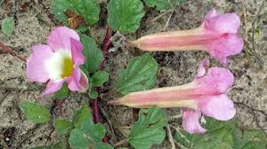

Pedaliaceae
Sesame Family
Pedaliaceae is a family of flowering plants in the order Lamiales, comprising about 13-14 genera and 70-80 species. Members are mostly annual or perennial herbs, sometimes shrubs, typically characterized by being covered in mucilaginous glandular hairs that make them feel slimy or sticky, especially when wet. The family is renowned for including sesame (Sesamum indicum) and for the often bizarre fruits adapted for animal dispersal via hooks or spines. It is primarily distributed in the Old World tropics and subtropics, particularly in arid regions of Africa and Madagascar.
Overview
The Pedaliaceae family is perhaps best known for Sesamum indicum, the source of sesame seeds and oil, one of the oldest cultivated oilseed crops. Beyond sesame, the family includes fascinating plants adapted to dry environments, particularly in Africa. A striking feature is the presence of specialized glandular hairs that exude mucilage, making the plants feel slimy. This might be an adaptation related to water retention or deterring herbivores.
Another hallmark of the family is the remarkable diversity and specialization of its fruits, many of which are indehiscent (not splitting open) and equipped with hooks, spines, or wings to facilitate dispersal by animals (epizoochory). Examples include the grappling hooks of Harpagophytum (Devil's Claw) and the barbed spines of Uncarina. Flowers are typically zygomorphic (bilaterally symmetrical) and tubular, often pollinated by insects.
Phylogenetically, Pedaliaceae belongs to the order Lamiales. It is closely related to the New World family Martyniaceae (which includes the Devil's Claw, Proboscidea), and these two families were sometimes combined in the past. Both share features like mucilaginous glands and specialized fruits, but molecular data supports their separation.
Quick Facts
- Scientific Name: Pedaliaceae R.Br.
- Common Name: Sesame Family
- Number of Genera: Approximately 13-14 (e.g., Sesamum, Harpagophytum, Pedalium, Uncarina, Rogeria)
- Number of Species: Approximately 70-80
- Distribution: Primarily Old World tropics and subtropics, especially Africa and Madagascar, extending to Asia and Australia. Absent from the New World (except cultivated sesame).
- Evolutionary Group: Eudicots - Asterids - Lamiids - Lamiales
Key Characteristics
Growth Form and Habit
Mostly annual or perennial herbs, sometimes suffrutescent (woody at the base) or low shrubs. Many are adapted to arid or seasonally dry climates, sometimes with tuberous roots (e.g., Harpagophytum).
Glandular Hairs
Plants are characteristically covered with distinctive mucilaginous glandular hairs (often multicellular stalks with a head of slime-producing cells). These glands make the leaves and stems feel sticky or slimy, especially when moist.
Leaves
Leaves are usually arranged oppositely, at least near the base of the plant, but may become alternate higher up. They are typically simple, though sometimes palmately lobed or compound. Margins can be entire, toothed, or lobed. Stipules are absent.
Inflorescence
Flowers are often borne solitarily in the leaf axils or in few-flowered axillary cymes.
Flowers
Flowers are usually bisexual and distinctly zygomorphic (bilaterally symmetrical).
- Calyx: Typically composed of 5 fused sepals (gamosepalous), forming a 5-lobed tube, usually persistent.
- Corolla: Composed of 5 fused petals (sympetalous), forming a tube that is often funnel-shaped or broadly tubular, frequently somewhat bilabiate (two-lipped) with 5 lobes. Colors range from pink, purple, magenta, and yellow to white, often with nectar guides (spots or lines) in the throat.
- Androecium: Stamens are typically 4, inserted on the corolla tube, and usually didynamous (2 long, 2 short). Anthers often coherent in pairs. A fifth, sterile stamen (staminode) is usually present.
- Gynoecium: The ovary is superior (rarely inferior), composed of 2 fused carpels. It is typically 2-locular, but often appears 4-locular due to the intrusion of false septa derived from the placentas. Placentation is axile, with 1 to numerous ovules per apparent locule. A nectar disc is usually present around the base of the ovary. The style is single and slender, terminating in a usually bilobed stigma.
Fruits and Seeds
Fruits are highly variable and often structurally complex, frequently adapted for dispersal by animals (epizoochory). They can be dehiscent capsules (like in Sesamum, which splits open) or indehiscent and nut-like or woody. Many possess characteristic hooks, spines, prickles, barbs, or wings. Examples include the large woody fruit with grappling hooks in Harpagophytum, the spiny nutlet of Pedalium, the capsule with barbed spines in Uncarina, or the winged fruit of Pterodiscus. Seeds are 1 to many per fruit or locule, with endosperm usually present but often thin and oily.
Chemical Characteristics
The family contains iridoid glycosides (e.g., harpagoside in Harpagophytum, known for anti-inflammatory properties), mucilage (from the glandular hairs), and lignans (like sesamin and sesamolin in sesame seeds, known for antioxidant properties). Sesame seeds are rich in oil.
Field Identification
Identifying Pedaliaceae often relies on the presence of mucilaginous hairs and the unique fruit structures, along with floral characteristics typical of Lamiales:
Primary Identification Features
- Habit: Mostly herbs or low shrubs, primarily in Old World dry tropics/subtropics.
- Surface Texture: Plants often feel slimy or sticky due to mucilaginous glandular hairs.
- Leaves: Usually opposite (at least below), simple (sometimes lobed).
- Flowers: Zygomorphic, tubular/funnel-shaped, often 5-lobed and somewhat bilabiate.
- Stamens: Typically 4, didynamous (2 long, 2 short), plus usually a staminode.
- Fruit: Highly variable, but often distinctively armed with hooks, spines, barbs, or wings (for animal dispersal), or a capsule (Sesamum).
Secondary Identification Features
- Ovary: Superior, 2 carpels often appearing 4-locular due to false septa.
- Calyx: Persistent, 5-lobed.
- Habitat: Often found in arid, semi-arid, or seasonally dry regions, sandy soils, or disturbed areas.
Seasonal Identification Tips
- Growing Season (often rainy season): Look for flowers and the slimy texture of leaves/stems.
- Dry Season: The persistent, distinctively armed fruits are often the most conspicuous feature for identification, found on dead plants or on the ground.
Common Confusion Points
- Martyniaceae (Devil's Claw Family): Very closely related (sometimes included in Pedaliaceae in older systems), also has mucilaginous hairs, zygomorphic flowers, and fruits with hooks/claws (e.g., Proboscidea). Martyniaceae is primarily a New World family, whereas Pedaliaceae is Old World (except cultivated sesame). Martyniaceae often has parietal placentation (vs. axile in Pedaliaceae).
- Acanthaceae: Also in Lamiales, often herbs/shrubs with opposite leaves and zygomorphic flowers. Acanthaceae typically lack mucilaginous glands, often have prominent bracts, and usually have explosive capsules with specialized seed-ejecting hooks (retinacula/jaculators) inside. Fruits are not typically armed externally for animal dispersal.
- Bignoniaceae: Also in Lamiales, often zygomorphic flowers, but primarily woody vines or trees, usually with compound leaves, and often long capsular fruits with winged seeds (different from Pedaliaceae capsules/armed fruits).
- Verbenaceae / Lamiaceae: Differ in flower structure (often less strongly zygomorphic or different symmetry), stamen number, ovary structure (often 4-lobed ovary with 4 nutlets in Lamiaceae), and fruit type. Lack prominent mucilaginous glands and armed fruits.
Field Guide Quick Reference (Old World Tropics/Subtropics)
Look For:
- Habit: Mostly herbs/shrubs
- Texture: Often slimy/sticky (mucilaginous glands)
- Leaves: Usually opposite, simple
- Flowers: Zygomorphic, tubular, 5-lobed
- Stamens: 4 (didynamous) + staminode
- Fruit: Capsule or nut-like, often with hooks/spines/wings
Key Distinctions:
- Mucilaginous glands
- Distinctive armed fruits common
- Old World distribution (vs. New World Martyniaceae)
- Axile placentation (vs. parietal in Martyniaceae)
- Different fruit/seed structures than Acanthaceae, Bignoniaceae
Notable Examples
Pedaliaceae includes the globally important sesame crop and plants with unique medicinal uses and dispersal mechanisms:

Sesamum indicum
Sesame
An annual herb cultivated for thousands of years for its oil-rich seeds. Origin likely Africa or India. Flowers are typically white to pale pink/purple, tubular and zygomorphic. The fruit is an erect, oblong capsule that splits open (dehisces) from the top to release numerous small, flattened seeds. Wild relatives occur mainly in Africa and India.

Harpagophytum procumbens
Devil's Claw / Grapple Plant
A perennial herb native to the Kalahari region of southern Africa. It has prostrate stems arising from a large tuberous root system. Flowers are pinkish-purple and trumpet-shaped. The fruit is highly distinctive – a large, woody, flattened capsule armed with multiple radiating arms bearing strong, recurved hooks (grapples) that attach firmly to animal fur or feet for dispersal. Tubers are used medicinally for anti-inflammatory properties (containing harpagoside).

Pedalium murex
Large Caltrops / Gokhru
An annual herb found in coastal areas and dry regions of Africa and South Asia. It has somewhat succulent leaves and yellow, zygomorphic flowers. The fruit is a hard, indehiscent, pyramid-shaped nutlet with sharp spines projecting horizontally from the four angles, resembling a caltrop. Used in traditional medicine.

Uncarina spp.
(Mouse Trap Tree)
A genus of shrubs and small trees endemic to Madagascar. They often have thick, succulent stems (pachycauls) and palmately lobed leaves. Flowers are showy, typically yellow or pink/purple, bell-shaped and zygomorphic. The fruit is woody and indehiscent, covered in numerous radiating spines that are tipped with recurved barbs (glochids), making them adhere strongly to anything they touch.
Phylogeny and Classification
Pedaliaceae is placed within the order Lamiales, a large and diverse order within the lamiid clade of asterids. This order is characterized by many families having zygomorphic flowers, superior ovaries, and often specialized chemical compounds like iridoids.
Molecular phylogenetic studies have clarified the relationships of Pedaliaceae within Lamiales. It is closely related to the New World family Martyniaceae (Devil's Claw family). These two families share striking similarities, including mucilaginous hairs and elaborate fruits adapted for animal dispersal, and were sometimes merged in older classifications. However, consistent molecular and morphological differences (e.g., placentation type, geographic distribution) support their recognition as distinct but sister families. Other related families within Lamiales include Acanthaceae, Bignoniaceae, Lentibulariaceae (bladderworts), and Verbenaceae, forming part of a large clade within the order.
Position in Plant Phylogeny (APG IV)
- Kingdom: Plantae
- Clade: Angiosperms (Flowering plants)
- Clade: Eudicots
- Clade: Asterids
- Clade: Lamiids
- Order: Lamiales
- Family: Pedaliaceae
Evolutionary Significance
Pedaliaceae is evolutionarily interesting due to:
- Fruit Specialization: Exhibits remarkable diversity and specialization in fruit morphology, particularly adaptations for epizoochory (dispersal via attachment to animals). This provides excellent examples of evolutionary adaptation for seed dispersal in specific environments (often arid).
- Convergent Evolution: The similarity in fruit adaptations between Pedaliaceae (Old World) and Martyniaceae (New World) suggests convergent evolution driven by similar selective pressures from large mammals.
- Glandular Structures: The prominent mucilaginous glands represent a distinctive physiological adaptation, possibly related to water relations or defense in dry habitats.
- Phylogenetic Relationships: Its position within Lamiales helps clarify relationships among families characterized by zygomorphic flowers and superior ovaries.
- Domestication History: Includes sesame, one of humanity's oldest oilseed crops, providing insights into plant domestication.